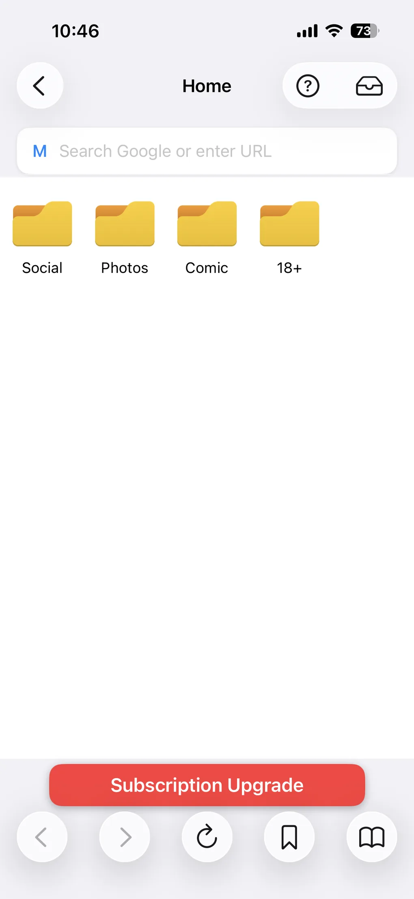
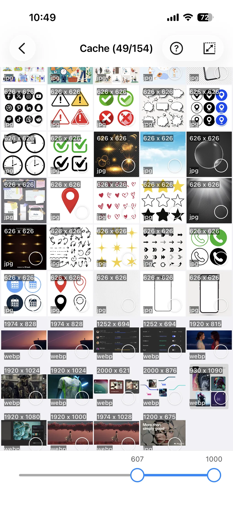
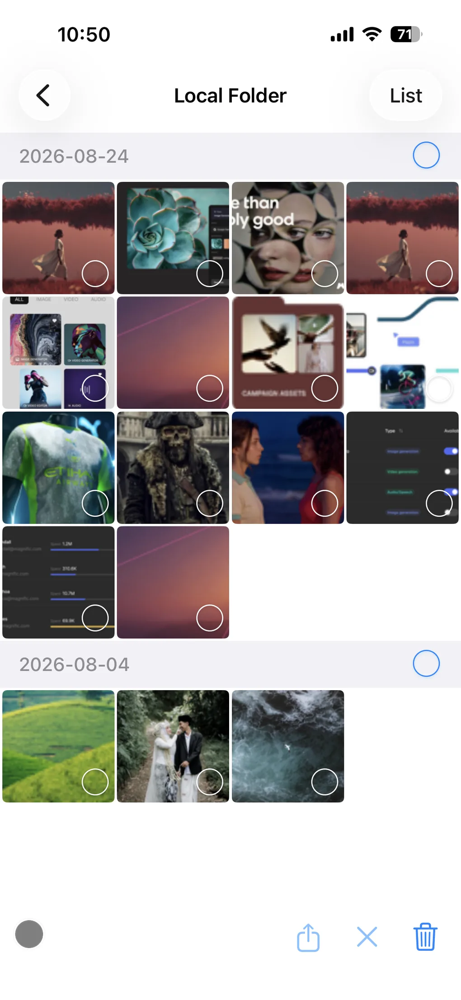

HD- und 4K-Hintergrundbilder von jeder Website aufs iPhone laden
Ein Hintergrundbild sieht im Browser perfekt aus und auf dem Sperrbildschirm furchtbar. Nicht weil die Website bei der Auflösung geflunkert hätte – sondern weil das Bild, das dein iPhone gespeichert hat, die Vorschau war, die auf der Seite angezeigt wird, und nicht die große Datei dahinter. ImageGet sammelt alle Bilder, auf die eine Seite verweist: So siehst du die echten Größen, kannst die größte behalten und sie in deiner Fotomediathek speichern.
Lade ImageGet kostenlos herunter – speichere das Hintergrundbild in voller Größe statt der Miniatur.
ImageGet herunterladenWarum Hintergrundbilder die am schwersten zu speichernde Bildart sind
Hintergrundbild-Websites sind darauf ausgelegt, die Datei in voller Auflösung zu schützen. Rechtsklick und langes Tippen sind meist gesperrt, der Download-Button öffnet oft erst eine andere Seite, und das Bild auf dem Bildschirm ist häufig eine verkleinerte Kopie des Originals. Genau diese Kopie zu speichern führt dazu, dass das Hintergrundbild in Safari scharf aussieht und überall sonst weich.
Das zweite Problem: Eine einzelne Seite verweist selten nur auf eine Datei. Sie verweist auf eine Miniatur, ein paar Zwischengrößen, manchmal auf eine anders zugeschnittene Mobilversion und manchmal auf ein Bild, das als CSS-Hintergrund eingebunden ist statt in einem normalen Bild-Tag. Welche Version du bekommst, hängt davon ab, wo du tippst.
Was „HD“ und „4K“ auf einem iPhone wirklich bedeuten
Zwei Zahlen zählen – und nur eine davon ist die, die alle zitieren.
- Pixel. Moderne iPhone-Displays liegen bei etwa 1170–1320 Pixeln Breite und 2530–2870 Pixeln Höhe. Ein Hintergrundbild ab dieser Auflösung sieht scharf aus; darunter skaliert iOS es hoch und Details gehen verloren.
- Seitenverhältnis. iPhone-Displays sind nahezu 9:19,5 – ein hohes Hochformat. Ein 4K-Hintergrundbild misst 3840 × 2160 und ist damit 16:9 Querformat. Es hat viermal so viele Pixel wie ein Full-HD-Bild und taugt trotzdem schlecht als Handy-Hintergrundbild, weil beim Festlegen mehr als die Hälfte des Bildes weggeschnitten wird.
„4K“ allein sagt also nur, dass die Datei groß ist – nicht, dass sie zu deinem Handy passt. Suche auf einer Hintergrundbild-Website zuerst den Bereich für Handys oder Hochformat und sieh dir dann die Pixelmaße an. Diese Kombination – hohes Format und genug Pixel – macht ein Hintergrundbild scharf.
Schritt 1: Den Link zur Seite des Hintergrundbilds kopieren
Kopiere die URL der Seite, auf der das Hintergrundbild zu sehen ist – nicht die Bilddatei und nicht den Download-Button der Website. ImageGet liest die Seite selbst, und dort liegen alle Versionen des Bildes.
Schritt 2: In ImageGet einfügen und auf Go tippen
Öffne ImageGet, füge den Link ein und tippe auf Go. ImageGet lädt die Seite und sammelt alle Bilder, auf die sie verweist: die Vorschau, jede vom Server ausgelieferte Größe und Bilder, die als Hintergrund der Seite eingebunden sind. So hast du den kompletten Satz in einem Raster statt einer geratenen Datei.

Schritt 3: Nach Auflösung filtern und die größte behalten
Dieser Schritt entscheidet, ob dein Hintergrundbild scharf wird. Schalte Smart Filtering ein und lege eine Mindestgröße fest: ImageGet wirft Miniaturen und Vorschau-Kopien raus und lässt die Version in voller Auflösung übrig. Wenn eine Seite dasselbe Bild in mehreren Größen ausliefert, sorgst du mit dem Filter dafür, dass du die große speicherst.
Tippe ein Bild an, um es im Vollbild zu öffnen, und zoome mit zwei Fingern hinein. Bei dieser Vergrößerung ist der Unterschied zwischen einer 400-Pixel-Vorschau und einem 3000-Pixel-Original offensichtlich – also prüfe es, bevor du speicherst.

Schritt 4: In deiner Fotomediathek speichern
Tippe auf Save All – die Bilder landen in deiner Fotomediathek, in der Auflösung, die die Website veröffentlicht hat. Unterwegs wird nichts hochskaliert oder neu komprimiert: Wenn die Website eine echte 4K-Datei hatte, ist das die Datei, die du bekommst.
Deine Downloads bleiben außerdem im Local Folder von ImageGet, gruppiert nach dem Tag, an dem du sie gespeichert hast. Wenn du mehrere Kandidaten vergleichst, ist das der Ort, an den du zurückgehst – die Versionen in voller Größe bleiben dort, bis du dich entschieden hast.

Schritt 5: Unter iOS als Hintergrundbild festlegen
Öffne das gespeicherte Bild in der Fotos-App, tippe auf Teilen und wähle Als Hintergrundbild verwenden, oder gehe zu Einstellungen → Hintergrundbild → Neues Hintergrundbild hinzufügen → Fotos. Zwei Dinge solltest du dabei wissen:
- iOS zoomt hinein. Der Sperrbildschirm skaliert und schneidet dein Bild zu, um den Bildschirm zu füllen. Ein Bild, das schon das Seitenverhältnis des Displays hat, verliert am wenigsten.
- Perspektive ausschalten, wenn das Hintergrundbild unter den Icons durchzurutschen scheint. Der Parallax-Effekt verschiebt das Bild beim Kippen des Geräts und schneidet dabei zusätzlich die Ränder weg.
Sieht das Ergebnis trotzdem weich aus, war die Datei wahrscheinlich von Anfang an klein: Geh zurück auf die ursprüngliche Seite und such die Version mit den meisten Pixeln.
Kurzcheckliste für Hintergrundbilder
- Hochformat, nicht Querformat: auf einem aktuellen iPhone rund 9:19,5.
- Mindestens so viele Pixel wie der Bildschirm: etwa 1170 × 2530 oder mehr.
- Der wichtige Teil des Bildes möglichst in der Mitte, damit der Zuschnitt ihn nicht erwischt.
- Ein Format, das das iPhone direkt öffnet: JPEG, PNG, HEIC oder WebP.
FAQ
Wie lade ich ein 4K-Hintergrundbild auf mein iPhone?
Kopiere den Link zu der Seite, auf der das Hintergrundbild liegt, füge ihn in ImageGet ein, tippe auf Go und filtere dann nach Größe, um die größte Version zu behalten, die die Website ausliefert. Tippe auf Save All, und die Datei in voller Auflösung landet in deiner Fotomediathek, bereit zum Festlegen als Hintergrundbild.
Warum sieht mein gespeichertes Hintergrundbild auf dem iPhone unscharf aus?
Meistens, weil die gespeicherte Datei die Vorschau war, die die Website anzeigt, und nicht das vollständige Bild dahinter. ImageGet sammelt alle Größen, auf die die Seite verweist, sodass du nach Auflösung filtern und die große Version statt der Miniatur speichern kannst.
Welche Auflösung brauche ich für ein iPhone-Hintergrundbild?
Moderne iPhone-Displays liegen bei etwa 1170–1320 Pixeln Breite und 2530–2870 Pixeln Höhe, bei einem Seitenverhältnis von ungefähr 9:19,5. Ein Hochformatbild mit dieser Pixelzahl oder mehr sieht scharf aus; hat es weniger, skaliert iOS es hoch und es wirkt weich.
Kann ich Hintergrundbilder kostenlos mit ImageGet laden?
Ja: Der kostenlose Plan enthält 2 Downloads für Web-Bilder, und Premium hebt das Limit für unbegrenztes Speichern auf.
Funktioniert das auf Websites, die Rechtsklick blockieren?
Ja. ImageGet liest die Seite und nicht deine Tipps – eine Website, die langes Tippen oder Rechtsklick sperrt, funktioniert trotzdem: Die Bilder, die auf der Seite stehen, sind die Bilder, die ImageGet sammelt.
Sehen. Speichern. Einfach.
Lade ImageGet kostenlos herunter und speichere Hintergrundbilder in voller Auflösung.
ImageGet herunterladen